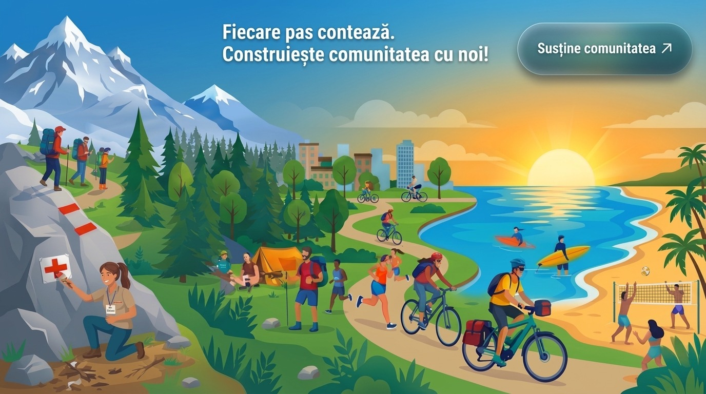

Fiecare pas contează
Alegi tu suma. Orice contribuție, cât de mică, ține HikeTag în mișcare pentru toată comunitatea.
Plata se face pe pagina Revolut, în siguranță. Poți plăti și cu cardul, chiar dacă nu ai cont Revolut.
Ești pe calculator? Scanează cu telefonul:
HikeTag a pornit dintr-o dorință simplă: să găsești ușor oameni cu care să ieși pe munte, pe bicicletă, la alergare sau la o tură prin oraș — și să nu mai stai acasă doar pentru că n-ai cu cine pleca.
Nu e o firmă în spate și nici investitori. Suntem noi doi, multe ore de muncă și o comunitate care crește cu fiecare tură.
Dacă aplicația ți-a adus un drum frumos sau oameni noi alături și vrei să dai ceva înapoi, ne bucurăm enorm. Iar dacă nu, e perfect în regulă — faptul că ești aici contează deja.
Ne vedem pe traseu, Alex & Stelian
Ce susții, de fapt
Uite ce ține în viață ajutorul tău:
O aplicație mereu pornită
Ca să găsești o tură la orice oră, cu toate evenimentele, mesajele și pozele voastre.
Direct în telefonul tău
Google Play și App Store au costurile lor, ca aplicația să se instaleze ușor și în siguranță.
Hărți, trasee și notificări
Ca să știi pe unde mergi și să afli la timp când pleacă grupul sau când îți scrie cineva.
Lucruri noi, mereu
Multe dintre ideile voastre ajung în aplicație. Susținerea ta înseamnă mai mult timp pentru ele.
Și dacă azi nu poți dona
Ajută la fel de mult, crede-mă:
-
Ia un prieten cu tine la următoarea tură — o comunitate crește din om în om.
-
Organizează tu o ieșire. Fiecare eveniment nou e un motiv în plus pentru alții să iasă din casă.
-
Lasă o recenzie în Google Play sau App Store — îi ajută pe alții să ne găsească.
-
Spune-ne ce ți-ar plăcea în aplicație, la hiketag@gmail.com.
Ai o întrebare? hiketag@gmail.com · Vezi și documentele legale